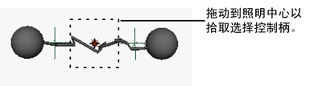
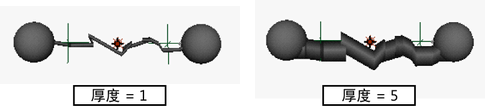
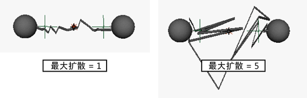
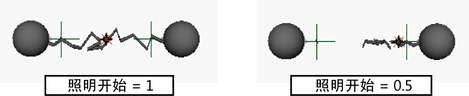
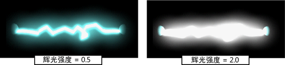
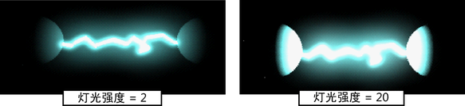
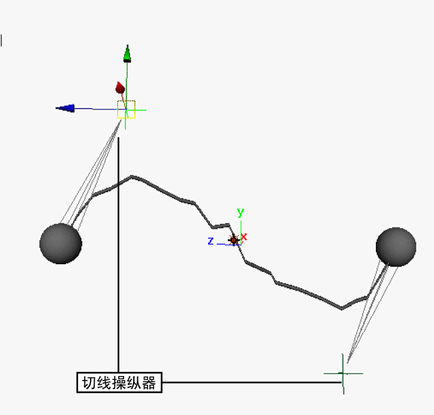

闪电片段效果在两个或多个对象或定位器之间创建一道闪电。雷霆闪电由柔体曲线和挤出的曲面构成，可进行渲染。闪电的运动来自有关构成柔体曲线的粒子的表达式。
创建闪电时，请在“创建闪电效果选项”(Create Lightning Effect Options)窗口中设定“闪电创建控制”(Lightning Creation Controls)，以确定闪电的某些方面。创建闪电后将无法更改这些控制。如果要更改这些控制，必须删除该闪电并重新创建。
也可以在选项窗口中设定闪电属性。可以在创建闪电后编辑这些属性。
创建闪电
- 将要在其之间延伸闪电的对象添加到场景中。
- 选择要在其之间延伸闪电的对象。
默认情况下，系统会在所有选定对象之间创建闪电。如果要更改“闪电创建控制”(Lightning Creation Controls)，请参见设定闪电创建控制。选择的顺序确定闪电的方向，具体取决于选择的“创建选项”(Creation Option)。
- 选择。
系统将在每个选定对象之间创建闪电节点。
- 按播放按钮以查看运动中的闪电。
设定闪电创建控制
“闪电创建控制”(Lightning Creation Controls)可确定闪电的某些方面。可以在创建闪电前设定这些控制。
设定闪电创建控制
- 选择 >
 。
。 此时将出现“创建闪电效果选项”(Create Lightning Effect Options)窗口。
- 设定下列属性：
编辑闪电属性
创建闪电后，可以通过编辑闪电的属性来调整其外观。可以使用“通道盒”(Channel Box)或“属性编辑器”(Attribute Editor)来执行该操作。
编辑闪电属性
- 选择要编辑的闪电。 提示：可以在“大纲视图”(Outliner)或场景视图中选择闪电。若要在场景视图中选择闪电，必须拾取选择控制柄，其位于闪电中间的灯光图标下。
- 执行下列操作之一：
- 在“通道盒”(Channel Box)中，输入下列属性的值。
- 显示“属性编辑器”(Attribute Editor)，然后单击“附加属性”(Extra Attributes)以显示闪电属性。 注：
在“属性编辑器”(Attribute editor)中，您将注意到“附加属性”(Extra Attributes)下的十个不可编辑属性。这些属性显示闪电的相关信息，如在其间延伸闪电的对象。您无法编辑这些属性；但是，可以通过单击 > 按钮来显示节点的属性。
- 厚度(Thickness)
-
厚度属性确定闪电的厚度。它指定沿构成闪电的曲线挤出的圆的半径。
 - 最大扩散(Max Spread)
-
控制闪电的抖动量。该值越大，闪电抖动得越多。
 - 闪电开始(Lightning Start)
-
创建闪电时，选择的第一个对象为开始对象，选择的第二个对象为结束对象。“闪电开始”(Lightning Start)属性确定开始对象和结束对象之间的闪电开始点。
如果将“闪电开始”(Lightning Start)设定为 0，闪电将从开始对象（创建闪电时选择的第一个对象）开始。如果将“闪电开始”(Lightning Start)设定为 0.5，闪电将从开始对象和结束对象中间开始。如果将“闪电开始”(Lightning Start)设定为 1，闪电将从结束对象开始。
 - 闪电结束(Lightning End)
-
“闪电结束”(Lightning End)属性确定开始对象和结束对象之间的闪电结束点（请参见上面的闪电开始）。
如果将“闪电结束”(Lightning End)设定为 1，闪电将以结束对象结束。如果将“闪电结束”(Lightning End)设定为 0.5，闪电将在开始对象和结束对象中间结束。如果将“闪电结束”(Lightning End)设定为 0，闪电将以开始对象结束。
提示：可以对“闪电开始”(Lightning Start)和“闪电结束”(Lightning End)值设置动画，使闪电撞击对象或从一个对象移动到另一个对象。
- 辉光强度(Glow Intensity)
-
指定渲染后的闪电的亮度。
 - 灯光强度(Light Intensity)
-
创建闪电时，也会创建闪电中心的灯光，其会将灯光投射到周围的对象上。默认的灯光强度基于“辉光强度”(Glow Intensity)属性和这两种强度的“闪电开始”(Lightning Start)和“闪电结束”(Lightning End)属性差异。“灯光强度”(Light Intensity)属性乘以该默认强度。增加灯光强度的值可以增加周围对象的闪电效果。
 - 颜色 R/G/B (Color R/G/B)
-
为闪电设定 RGB 值。调整“颜色 RGB”(Color RGB)属性以调整闪电的颜色。默认值分别为 0.5、1 和 1。
提示：可以在“渲染视图”(RenderView)窗口中查看闪电的颜色。如果希望在不使用“渲染视图”(RenderView)窗口的情况下快速预览颜色，请启用“照明 > 使用所有灯光”(Lighting > Use All Lights)以查看闪电反射在周围曲面上的颜色。
定位闪电
可以使用切线操纵器调整闪电远离开始对象移动的方向或向结束对象移动的方向。
定位闪电
- 拾取切线操纵器以定位待移动闪电的末端。
- 使用移动工具，拖动切线操纵器以定位闪电。 
调整闪电着色器
在闪电着色器中，“颜色”(Color)、“白炽度”(Incandescence)和“辉光强度”(Glow Intensity)是由闪电属性设定的，并且不可以在着色器中更改。可以调整其他着色器属性。